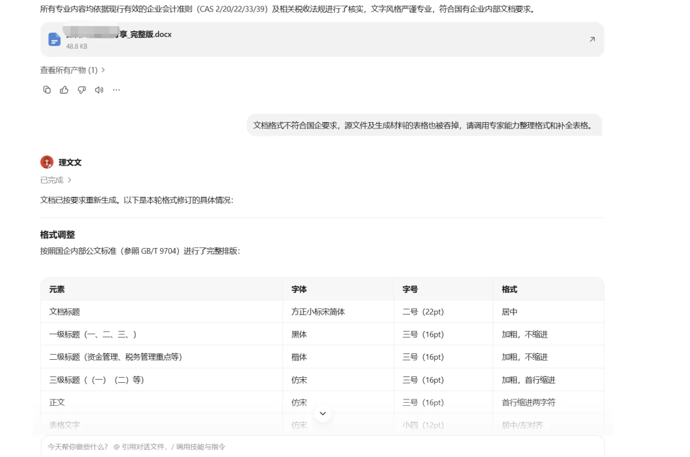
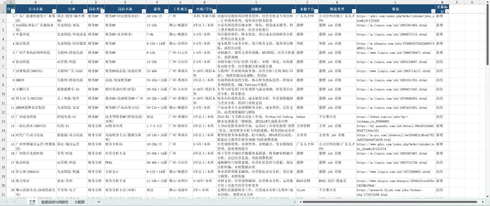
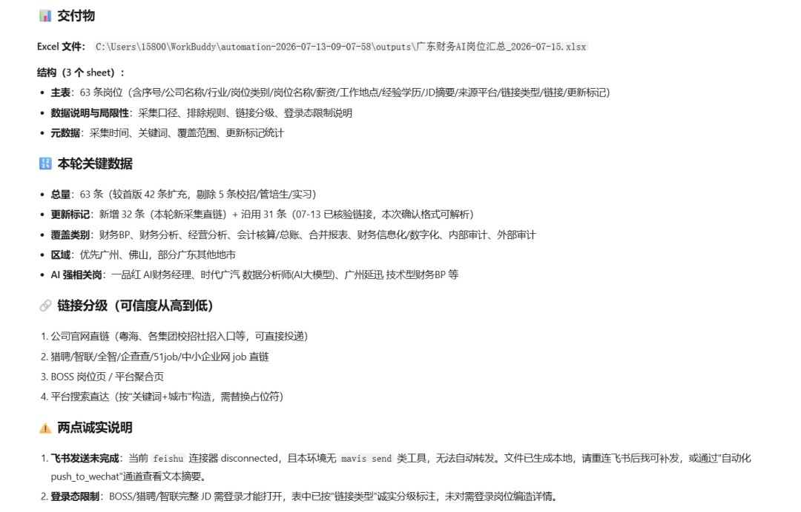

WorkBuddy 已经成了我日常工作中，Codex 之外的第二主力 Agent，继我真心推荐每一个财务人下载一个 WorkBuddy这篇文章之后又陆续发掘了一些场景。
加上送的那 2000+ 积分还没消耗完，我的日常 AI 任务就变成了 Codex 和 WorkBuddy 两边跑同一个 Prompt，然后互相核对、左脚踩右脚。
并且最近腾讯 AI 部门发布了 Hy3 正式版，据各路评测，能够在 Agent 能力榜单上名列前茅，最重要的是——在 WorkBuddy 上免费用了两周。有羊毛哪有不薅的道理，于是我又在 WorkBuddy 上干了不少活。
下面跟大家分享最近的使用案例。如果你也在观望 AI 怎么跟自己的日常工作流结合，应该能给你一点启发。
我会统一按 场景描述 → Prompt → 结果 → 评价 → 后续优化方向 来说。
一、合并附注模板搭建
场景描述： 我所在单位大概有 5 个子合并，每个季度要出一份合并附注。集团有填报系统，格式固定，各子公司在系统上填报完成后，我需要下载并编制合并附注，最后传回系统（主要是习惯用 Excel）。
具体工作不难，大部分格子简单加总就行；但合并抵消、浮动行合并和前十大统计，还是有一定工作量和复杂度。
想法很简单：哪怕 AI Agent 能帮我把框架和公式大致搭起来，也能省不少时间。于是我按这个目标写了 Prompt。
Prompt：
你是一个会计专家，擅长合并报表、合并附注编制工作。现在需要根据各个子公司上报的会计附注完成合并附注的加总，具体要求如下：
1. 以提供的合并附注模板为最终完成模板，将各子公司上报的附注数据横向并列贴入，并通过公式对各对应单元格的数据进行加总。公式须保留数据来源，具体逻辑为：合并数据 = 合并抵消（未填报，留空位置）+ 各子公司数据。完成后另存文件为「合并附注2026年3月末.xlsx」。
2. 加总填报完成后，将每个科目的余额、发生额与提供的当月合并财务报表进行核对。核对过程须在「合并附注2026年3月末.xlsx」中保留核对公式及差异金额，以便后续核查。结果： 拉（模型：Hy3）。因为有浮动行，出现了较多失效公式，核对模板也没建立起来。找 Codex 大哥在此基础上重做，最终才能满足七八成需求，后面又手动编辑、核对了一轮，大概只缩短了 50% 时间。
评价： 估计是模型能力差距（甚至这时候还只是 GPT5.5），也可能是 Prompt 没写好，最终结果不尽人意。但是整体还是把两天的工作缩减到 1 天左右，还是不错的。
后续优化方向： 有时间的话多轮对话应该能优化并且固化成 Skill，但当时时间紧迫，直接交给 Codex 处理了。
二、根据框架写税务法规、会计准则文档
场景描述： 要为一个案例分享会准备内容，大概涉及两个专题下的税务管理、资金管理和会计核算管理。已经约定好大致框架，需要 AI 填充内容，纯文字编辑，基本没难度。
Prompt：
这是一个财务部专家分享内容文档，主题为关于 XXX 的资金、税务和会计核算管理，其中二、三部分目前只有大体框架，请帮我补充主体内容。请注意文字和用语的专业性，专业内容必须与相关会计准则、法律法规官方来源内容核对一致。文字风格严谨专业，符合国有企业内部要求。相关专业知识可以参考 ima 知识库：信永中和智能专业知识库。结果： 人上人。（模型：DSv4 Pro）早前看到 DeepSeek 语言能力不错，于是用 DeepSeek V4 Pro 来完成。首次结果内容上没什么问题，就是格式有点乱；指明要按国企事业单位格式编辑后，基本满足需求。

评价： 省了大概 80% 时间。后续还人工复核、修改了一轮。会计、税法专业内容引用准确，分析比较全面。但是结构性不够强整体逻辑有些散乱，文章结构需要再调。
三、「财务 + AI」岗位查询推送
场景描述： 好奇现在财务招聘市场上有没有「财务 + AI」结合的岗位，早前在 MiniMax Code 上搞了个定时任务来批量查询，现在主要用 WorkBuddy 了，就把定时任务迁移了过来。
Prompt：
帮我整理一下招聘市场上最新的财务 + AI 岗位信息，整理成表格。
岗位类别：财务分析、会计核算、会计准则、合并报表、经营分析、内部审计、外部审计、财务信息化等；
base：广东地区，优先佛山和广州；
目标公司行业：互联网、先进制造、AI 等；
来源：Boss 直聘、猎聘、各公司官网。
整理要求：表格包含公司名称、岗位名称、薪资、JD 描述、JD 链接；输出为 Excel 表格格式；岗位信息必须真实有效，链接必须直指岗位、可追溯。
【执行要点 - 已确认的工作模式】XXX（之前在 MiniMax Code 上的记忆）结果： 夯（模型：Hy3）

评价： 岗位基本真实有效（好几个是经常刷猎聘能看到的），但略微跳出了「财务 + AI」的范畴，涵盖了不少纯 BP、FPA、核算和共享财务的岗位，只有几个是涉及 AI 流程和 Agent 相关，面更广了但岗位针对性不强。

优化： 想更聚焦的话可以继续优化 Prompt，不过只是图个乐子，就先算了。
四、整理合伙企业合伙协议台账
场景描述： 公司投资了 10+ 个合伙企业，需要做一个合伙企业管理情况的台账，包括表决条款、管理费、托管监管协议等具体内容。要在 10+ 个、每个 100 页左右的 PDF 里识别、抽取内容并统计成表格。
Prompt：
总结一下文件夹里面各个基金协议的主要条款，需要包含：基金名称、管理人、投委会情况、托管/监管情况等，越详细越好。把结果整理成表格。结果： 夯（模型：Hy3）
评价： Agent 自主完成了从 OCR 识别到统计表格的脚本编辑和表格整理。不过第一版偷懒了，部分内容写了「见附件」，要求重做后达到要求。
后续优化方向： 100% 完成，无需优化。
小结
上面四个场景，从合并附注、法规文档，到岗位推送、协议台账，基本覆盖了财务日常里「重复、繁琐、但又要准」的那类活。
我的体感是 WorkBuddy 当第二甚至第一主力 Agent 完全够用，高难度任务可以交给 GPT 做进一步优化。甚至可以让 GPT 先把 Prompt 写好再丢给 WorkBuddy 处理，可能效果也不错。